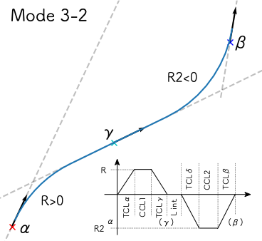
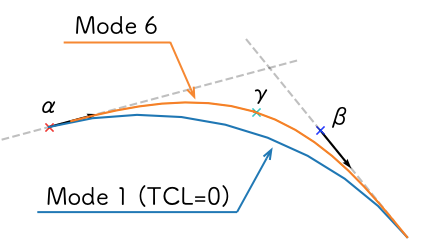
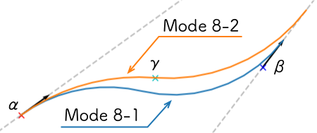
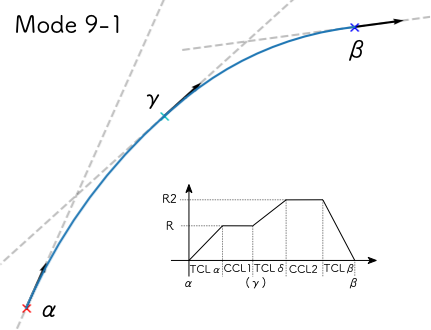
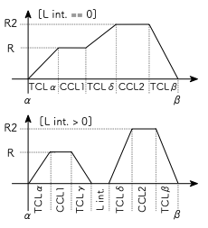

Measure ウィンドウ¶

カーソル機能¶
プロットウィンドウ上の座標と方角を調べる機能です。 A-Dの4つのカーソルをそれぞれ独立に操作できます。
マウスでの操作¶
位置を調べる¶
Pos.ボタンを押すと、プロットウィンドウ上にx印カーソルが現れ、左クリックするまでの間マウスで位置を動かせます。 マウスでカーソルを動かしている間、カーソルの座標がx,yフィールドに表示されます（単位は[m]）。
trackボックスで @absolute が指定されている場合は、カーソルはプロットウィンドウ内を自由に移動できます。
軌道上の座標を調べたい時は、trackボックスで軌道キーを選択してからPos.ボタンを押すと、対象の軌道に沿ってカーソルを動かせます。 このとき、カーソルが示す地点の距離程がkilopostフィールドに表示されます（単位は[m]）。
方角を調べる¶
Dir.ボタンを押すと、プロットウィンドウ上に方角カーソルが現れ、左クリックするまでの間マウスで方角を動かせます。 マウスで方角を動かしている間、カーソルの方角がdirフィールドに表示されます(単位は[°])。
trackボックスで @absolute が指定されている場合は、方角カーソルは360°自由な方向に向けられます。
trackボックスで軌道キーを選択している場合は、方角カーソルはx印カーソルが示している地点の軌道の向きにのみ向けられます。
カーソル座標の手入力¶
Val.ボタンを押すと、x, y, dir, kilopostフィールドに入力した値に基づいてカーソルの位置と方角を設定します。
trackボックスで @absolute が指定されている場合は、x, y, dirフィールドの内容が反映されます。
trackボックスで軌道キーを指定している場合は、kilopostで指定した距離程上にカーソルが移動します。 この時x, y, dirフィールドの内容は無視されます。
Rel.をチェックしてからVal.ボタンを押すと、下記のset offsetダイアログが現れ、カーソルの現在位置に対して指定した値だけ位置と方角をオフセットできます。 座標系の取り方は下記を参照してください。 この機能はtrackボックスで軌道キーを選択している場合のみ有効です。


測量機能¶
distance, direction¶
from, toボックスで選択した2つのカーソル間の距離、方角を表示します。
Pos., Dir.ボタンで選択したカーソルを動かしている間、値は自動で更新されます。 また、左クリックした時点での距離と方角がターミナルに印字されます。
NearestTrack¶
Cursorボックスで選択したカーソルに対して、trackボックスで選択した軌道上で最もカーソルに近い点を探索します。
カーソルと軌道を選択してNearestTrackボタンを押すと、下図のようにカーソルと軌道上の最近接点間にラインが引かれ、探索結果（最近接点に該当する距離程、カーソルとの距離）がターミナルに印字されます。
プロットウィンドウに引かれたラインは、メインウィンドウのReplotを実行すると消去できます。

//, ⊥¶
Cursorボックスで選択したカーソルに対して、方角カーソルが示す方角に応じた距離の測定を行います。
//ボタンを押すと、方角カーソルに沿った方向に動くカーソル(緑色)が現れ、親カーソルとの距離がdistanceフィールドに表示されます。 左クリックすると、その時点での測定データがターミナルに印字され、測定を終了します。
⊥ボタンを押すと、方角カーソルと直交する方向に動くカーソル(緑色)が現れ、//の場合と同じような測定ができます。

CurveTrack Solver¶
α,β,γボックスで選択したカーソルを通る最適な曲線軌道を探索します。
カーソルα, βの位置と方角を決め、Modeを選択してDo Itボタンを押すと、計算結果がプロットウィンドウとターミナルに出力されます。
計算結果はCurve構文の形でも出力されます。 mapsyntaxチェックを外すと、Curve構文での出力を停止します。
プロット画面の曲線軌道計算結果は、メインウィンドウのReplotボタンを押すと消去されます。
緩和曲線つきの曲線軌道を計算する場合は、TCL α, TCL βフィールドに曲線前後の緩和曲線長を入力し、逓減関数をline/sinラジオボタンで選択しておきます。
Mode¶
計算Modeは次の通りです。
α(fix)->β(free), R(free)
カーソルαを起点として、カーソルβの延長線上に終点をもつ曲線軌道の半径R、円曲線長CCLを求める
α(free)->β(fix), R(free)
カーソルαの延長線上に始点をもち、カーソルβを終点とする曲線軌道の半径R、円曲線長CCLを求める
3-1. α(free)->β(free), R(fix)
Rフィールドに入力された半径Rの曲線軌道について、カーソルα, βの延長線上に始点, 終点を持つものを求める
求めた軌道について、軌道始点とカーソルαとの距離、円曲線長CCLを出力する

3-2. α->γ->β, (fixed R,R2)
半径Rでカーソルα, γの延長線上に始点、終点を持つ曲線軌道1、半径R2でカーソルγ, βの延長線上に始点、終点を持つ曲線軌道2を同時に求める
緩和曲線長について
TCLα, TCLγ: 曲線軌道1の入口側、出口側
TCLδ, TCLβ: 曲線軌道2の入口側、出口側
求めた軌道について次のパラメータを出力する
曲線軌道1の始点とカーソルαとの距離
曲線軌道1の円曲線長CCL1
曲線軌道2の円曲線長CCL2
曲線軌道1の終点と曲線軌道2の始点の距離L int.
与えられた条件で軌道が求められない場合、"Invalid parameters"エラーを出す
例
曲線軌道1終点よりも手前に曲線軌道2始点が来る場合
曲線半径R, R2の符号がカーソルα, γ, βの方位と一貫しない場合
- 
α(fix), R(fix), CCL(fix)
カーソルαを起点とする半径R, 円曲線長CCLの曲線軌道について、終点座標を求める
Assign results to cursorをチェックしている場合は、カーソルβを求めた終点座標に設定する
β(fix), R(fix), CCL(fix)
カーソルβを終点とする半径R, 円曲線長CCLの曲線軌道について、起点座標を求める
Assign results to cursorをチェックしている場合は、カーソルαを求めた起点座標に設定する
{kind=link}

α(fix)->β(free) via γ, R(free)
カーソルαを起点として、カーソルγを経由し、カーソルβの延長線上に終点をもつ曲線軌道の半径R、緩和曲線長TCL、円曲線長CCLを求める
Mode 1でTCLα = TCLβ = 0とした場合の計算結果をもとに、カーソルγと曲線軌道の距離が最小となるようにTCLを計算する
このとき計算される緩和曲線長は、起点側・終点側で同一長さとなる
TCLを計算できない場合は、エラーメッセージ "Unreachable waypoint."を表示する
TCL=0の場合の曲線軌道より内側にカーソルγが位置している場合に発生
- 
α(free)->β(fix) via γ, R(free)
カーソルαの延長線上を起点として、カーソルγを経由し、カーソルβを終点とする曲線軌道の半径R、緩和曲線長TCL、円曲線長CCLを求める
Mode 6に対して、固定点をカーソルβに変更したもの
その他の注意点はMode 6と同様
Reverse curve
カーソルαを起点、カーソルβの延長線上を終点とする反向曲線（互いに向きの異なる2つの円曲線を接続したもの）を求める
8-1. Reverse α->β
起点側の曲線軌道終点はカーソルα, βの中点に自動設定
8-2. Reverse α->γ->β
カーソルγの位置で起点側の曲線軌道終点を指定する
カーソルγの方位(Dir.)は無視されます
入力パラメータ(8-1, 8-2共通)
TCLα, γ: 起点側曲線軌道の緩和曲線長(α: 入口側、γ:出口側)
TCLδ, β: 終点側曲線軌道の緩和曲線長(δ: 入口側、β:出口側)
L int.: 2つの曲線軌道の中間直線長
- 
Compound curve
カーソルαを起点、カーソルβの延長線上を終点とする複心曲線（半径の異なる二つの円曲線を接続したもの）を求める
以下の説明では二つの円曲線の向きが同じ場合を示していますが、カーソルα, βの設定次第では反向曲線も求められます
9-1. Compound α->γ->β
カーソルγで起点側 円軌道 の終点を指定する
位置(Pos.)と方位(Dir.)の両者を指定する必要があります
正確には次の計算手順を経るため、カーソルγを通過しない曲線が得られる場合があります
カーソルαを起点、カーソルγの延長線上を終点とする曲線の半径R1を求め、起点側曲線軌道の半径とする
この曲線の入口側緩和曲線長さはTCLα、終点側緩和曲線なしとする
1.で求めた曲線軌道上の点を始点、カーソルβの延長線上を終点とする曲線(半径R2)を求める
この曲線の入口側緩和曲線長さはTCLδ, 終点側緩和曲線長さはTCLβとする
入口側緩和曲線は、半径R1からR2へ遷移する曲線となる
入力パラメータ
TCLα: 起点側曲線軌道入口側の緩和曲線長
TCLδ: 2つの曲線軌道の中間緩和曲線長
TCLβ: 終点側曲線軌道出口側の緩和曲線長
TCLγ, L int. は無効です
与えられた条件で軌道が求められない場合、"Invalid parameters"エラーを出す
- 
9-2. Compound α->β (fixed R)
起点側曲線軌道の半径をRとした場合の複心曲線を求める
カーソルγは無効
入力パラメータ
R: 起点側曲線軌道の半径
L int.: 2つの曲線軌道の中間直線長
TCLα: 起点側曲線軌道入口側の緩和曲線長
TCLβ: 終点側曲線軌道出口側の緩和曲線長
L int. == 0の場合
TCLδ: 2つの曲線軌道の中間緩和曲線長
TCLγは無効
L int. > 0の場合
TCLγ: 起点側曲線軌道出口側の緩和曲線長
TCLδ: 終点側巨船軌道入口側の緩和曲線長
- 
与えられた条件で軌道が求められない場合、"Invalid parameters"エラーを出す
9-3. Compound α->β (fixed R,R2)
起点側曲線軌道の半径をR、終点側をR2とした場合の複心曲線を求める
入力パラメータにR2が追加される他はMode 9-2と同一
{kind=link}
{kind=link}
{kind=link}
計算結果の出力例¶
上の図でMode 3の計算を行った場合のターミナル出力は以下の通りです。 # から始まる文は説明のために書き加えたもので、実際には出力されません。
[Curve fitting]
Inputs:
Fitmode: 3. α(free)->β(free), R(fix)
Cursor α,β: A,B
Ponint α: (-109.225328, 12.428684)
Ponint β: (139.534313, 46.285293)
Direction α: 33.036680
Direction β: -40.175224
Transition func.: line
TCL α: 0.000000
TCL β: 0.000000
R: -400.000000
Results:
CCL: 511.115511 # 円軌道の長さ
startpoint: (-195.139998, -43.443185) # 始点座標
shift: -102.484127 # 始点座標とカーソルαの距離
# ここからCurve構文の出力
$pt_a -102.484127; # $pt_aはカーソルαの位置の距離程を想定
$cant = 0; # $cantはカント設定値を想定
Curve.SetFunction(1);
Curve.Interpolate(0.000000,0.000000);
$pt_a -102.484127;
Curve.Interpolate(-400.000000, $cant);
$pt_a +408.631384;
Curve.Interpolate(-400.000000, $cant);
$pt_a +408.631384;
Curve.Interpolate(0.000000,0.000000);
カーソルαが軌道上の点を示している場合（trackボックス != @absolute の場合）、Curve構文の先頭にカーソルαが示す地点の距離程を出力します。 上の例で、カーソルαが距離程1234mの地点を示していた場合の出力例は次の通りです。 この機能はversion 1.3.1以降で有効です。
# ここからCurve構文の出力
$pt_a = 1234; # $pt_aが示す地点の距離程 (ver. 1.3.1より)
$pt_a -102.484127; # カーソルαから曲線始点までのオフセット
$cant = 0; # $cantはカント設定値を想定
Curve.SetFunction(1);
Curve.Interpolate(0.000000,0.000000);
$pt_a -102.484127;
Curve.Interpolate(-400.000000, $cant);
$pt_a +408.631384;
Curve.Interpolate(-400.000000, $cant);
$pt_a +408.631384;
Curve.Interpolate(0.000000,0.000000);